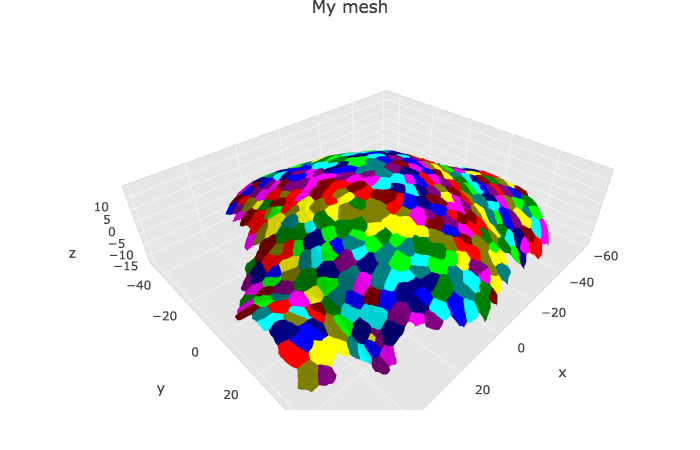

Visualisation of MorphoGraphX meshes
Vignette Author
2018-10-19
Source:vignettes/MGX_meshes.Rmd
MGX_meshes.RmdVisualisation of a single mesh
The data in the example below were created with the package {mgx2r}, on the example dataset of {mgx2r}. This dataset is a timelapse recording of the development of a shoot apical meristem of the plant expressing a membrane marker. I took one 3D stack every 12h and have 5 timepoints in total. To know more about the example dataset of {mgx2r}, see the readme of {mgx2r}.
myMesh <- readRDS(system.file("extdata",
"mgx/mesh_meristem_full_T0.rds",
package = "cellviz3d"))
myCellGraph <- readRDS(system.file("extdata",
"mgx/cellGraph_meristem_full_T0.rds",
package = "cellviz3d"))plotlyMesh() creates a {plotly} graph of type mesh 3D, with custom colors and custom hover information for a single mesh. Below, the mesh is displayed with one color and one cell label per biological cell. Cell label is visible only when hovering over the cell center. plotlyMesh() can be combined with show_tensors() and/or show_cellcontour().
meshCellcenter <- myCellGraph$vertices[,c("label","x", "y", "z")]
plotlyMesh(meshExample = myMesh,
meshColors = myMesh$allColors$Col_label,
meshCellcenter = meshCellcenter) %>%
layout(scene = list(aspectmode = "data"))
Visualisation of a time serie
The data in the example below were created with the package {mgx2r}, on the example dataset of {mgx2r}. This dataset is a timelapse recording of the development of a shoot apical meristem of the plant expressing a membrane marker. I took one 3D stack every 12h and have 5 timepoints in total. To know more about the example dataset of {mgx2r}, see the readme of {mgx2r}.
mesh.all <- readRDS(system.file("extdata",
"mgx/mesh_meristem_full_all.rds",
package = "cellviz3d"))
cellGraph.all <- readRDS(system.file("extdata",
"mgx/cellGraph_meristem_full_all.rds",
package = "cellviz3d"))plotlyMesh_all() creates a plotly graph of type mesh 3D with a slider for a serie of meshes.
meshColors.all <- list(NULL, NULL, NULL, NULL, NULL)
plotlyMesh_all(meshExample = mesh.all,
graphExample = cellGraph.all,
meshColors = meshColors.all,
display = 'heatmap')
For more examples, see the vignette of the {mgx2r} package: